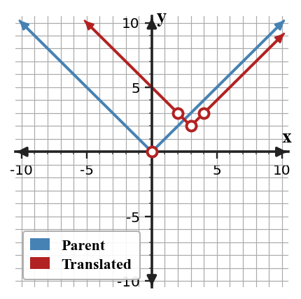
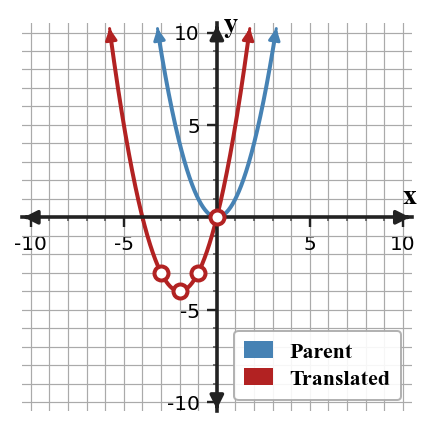

Translations
Mathematical idea: A translation moves a graph left, right, up, or down without changing its shape.
Today you will use vertices and matching points to graph translated functions. You will also connect equation parameters to movement on the coordinate plane.
Learning Target
Learning Target: Students will graph and write translated functions using key points and key features.
I can statements
- I can build translated graphs by moving key points and key features from a parent function.
- I can use horizontal and vertical shifts to write equations for translated functions.
- I can predict how changing values in an equation moves a graph left, right, up, or down.
What's To Come
This is a long-range preview for future lessons. Do not solve it today. Instead, annotate it individually. Circle anything familiar, underline symbols or directions that seem important, and write notes about what information you think will be needed later.
As you annotate, ask yourself: What parts (words, symbols, graphs) do you KNOW? What parts look FAMILIAR? What parts look like jibberish?
Create a translated absolute value function that has vertex $(3, -2)$ and passes through a point with output $5$. Include the equation, two supporting points, and a short context where the vertex has meaning.
Intro
Directions
Read the introduction aloud with a partner or in a small group. As you read, annotate the text by highlighting important ideas, circling key vocabulary, and writing short notes about connections, questions, or predictions in the margins.
A parent function is a simple starting graph for a family. When the graph is translated, its shape stays the same while its location changes. That means a translated absolute value graph is still a V, and a translated quadratic graph is still a parabola.
A vertical shift changes every output by the same amount. In an equation such as $g(x)=f(x)+5$, each output of $f$ is increased by $5$. The graph moves up because the $y$-values are larger.
Suppose you know the vertex of a parent graph and two nearby points. Moving those points together can create a new graph without plotting every point from scratch. This is useful because the important features move in the same direction as the rest of the graph.
Translations can be represented with parent-function graphs, translated graphs, equations in transformation form, and tables before and after the move. Key points, vertices, and intercepts help connect these representations.
In a context, a vertical shift might change a starting value, while a horizontal shift might change when an event begins. The model should explain what the movement means, not just where the graph goes.
Stop and Discuss
- What stays the same when a parent function is translated?
- What does a vertical shift do to the outputs of a function?
- Why are key points helpful when graphing a translation?
A translation moves every point of a graph the same horizontal and/or vertical distance.
For $g(x)=|x-3|+2$, the parent vertex $(0,0)$ moves to $(3,2)$.
| Parent point on $y=|x|$ | Translation | New point on $g(x)=|x-3|+2$ |
|---|---|---|
| $(0,0)$ | right $3$, up $2$ | $(3,2)$ |
| $(1,1)$ | right $3$, up $2$ | $(4,3)$ |
| $(-1,1)$ | right $3$, up $2$ | $(2,3)$ |

Context: If $x$ measures days, shifting right 3 means the same pattern begins 3 days later.
Example 1: Describe a Vertical Translation
A parent function $f$ is changed to $g(x)=f(x)-4$.
- Describe the translation from $f$ to $g$.
- If $(2,7)$ is on $f$, what point is on $g$?
- Explain why the graph shape does not change.
You Try It 1: Describe a Vertical Translation
A parent function $f$ is changed to $g(x)=f(x)+6$.
- Describe the translation from $f$ to $g$.
- If $(-1,3)$ is on $f$, what point is on $g$?
- Explain what happens to every output value.
Stop and Discuss
- How does a vertical shift change a point on the graph?
- What stayed the same about the parent graph?
In transformation form, the outside number changes outputs, while the number grouped with $x$ changes inputs.
For $h(x)=(x+2)^2-4$, the vertex of $y=x^2$ moves left $2$ and down $4$.
| Equation | Horizontal movement | Vertical movement | Vertex |
|---|---|---|---|
| $y=x^2$ | none | none | $(0,0)$ |
| $h(x)=(x+2)^2-4$ | left $2$ | down $4$ | $(-2,-4)$ |

Context: The vertex is the benchmark point, so translating the vertex also translates the graph feature that matters most.
Example 2: Graph an Absolute Value Translation
Graph $g(x)=|x+3|-2$ by translating key points from $y=|x|$.

- Mark the translated vertex.
- Plot two symmetric points one unit from the vertex.
- Explain how the equation tells you the graph moves left and down.
You Try It 2: Graph an Absolute Value Translation
Graph $g(x)=|x-4|+1$ by translating key points from $y=|x|$.
- Mark the translated vertex.
- Plot two symmetric points one unit from the vertex.
- Explain how the equation tells you the graph moves right and up.
Stop and Discuss
- Why is the vertex the first point to move for an absolute value graph?
Example 3: Graph a Quadratic Translation
Graph $h(x)=(x-2)^2+1$ by translating key points from $y=x^2$.
- Mark the translated vertex.
- Plot at least two matching points on opposite sides of the vertex.
- Explain how the translated points preserve the parabola shape.
You Try It 3: Graph a Quadratic Translation
Graph $h(x)=(x+1)^2-3$ by translating key points from $y=x^2$.
- Mark the translated vertex.
- Plot at least two matching points on opposite sides of the vertex.
- Explain how you know the graph still opens upward.
Stop and Discuss
- How are the translated quadratic points connected to the parent points?
Example 4: Critique a Horizontal Shift Claim
A classmate says $y=(x+5)^2-2$ moves $y=x^2$ right $5$ and down $2$ because the equation contains $x+5$.
Student claim: "The graph moves right $5$ and down $2$."
- Identify the vertex from the equation.
- Explain why the horizontal movement in the claim is not reasonable.
- Give the correct translation from $y=x^2$.
You Try It 4: Critique a Horizontal Shift Claim
A classmate says $y=|x-6|+4$ moves $y=|x|$ left $6$ and up $4$ because the equation contains $x-6$.
Student claim: "The graph moves left $6$ and up $4$."
- Identify the vertex from the equation.
- Explain why the horizontal movement in the claim is not reasonable.
- Give the correct translation from $y=|x|$.
Stop and Discuss
- What makes horizontal shifts easy to misread in equations?
Summary
You graphed and described translations by moving key points from parent functions. A translation changes location but not the basic shape of the graph.
A value added outside the function shifts outputs up or down, while a value grouped with $x$ shifts the graph left or right. Vertices and matching points are efficient anchors for graphing.
A common error is reading $x-h$ or $x+h$ as if the sign directly names the direction without thinking about the input that makes the inside equal zero.
Strong understanding means you can move points, write an equation for the movement, and explain what the shift means in a context.
Common Mistakes
- Reversing horizontal direction. Why it is tempting: the sign inside the parentheses looks direct. What to check instead: find the input that makes the inside equal zero.
- Moving only the vertex. Why it is tempting: the vertex is the easiest point to see. What to check instead: translate at least two matching points too.
- Changing the shape. Why it is tempting: redrawing from memory can distort the graph. What to check instead: move every point the same distance.
- Mixing vertical and horizontal shifts. Why it is tempting: both appear in the equation. What to check instead: separate changes inside from changes outside.
- Ignoring context meaning. Why it is tempting: the graph movement feels purely visual. What to check instead: explain what the shift means for inputs or outputs.
Optional Future Task Reflection
Look back at the future task. Do not solve it yet. Highlight one part that makes more sense now than it did at the beginning. Circle one part that still feels unfamiliar. Write one sentence about what representation you would look at first.
For $g(x)=f(x)+5$, describe the translation from $f$ to $g$.
Use the blank coordinate plane to graph $g(x)=|x-2|+3$. Mark the translated vertex and two symmetric points.

What is one idea about translations of functions you understand better now than at the start of class? Write at least one complete sentence.
What is one thing about translations of functions you still want to understand or practice? Be specific — name the idea, not just "everything."